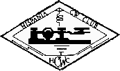

HCC - Hispania CW Club (Spanska telegrafiklubben)
Sedan 1983 är denna klubb aktiv i Spanien och förespråkar telegrafikonsten.
För närvarande är det ca 500 medlemmar.
Medlemsskap är öppet för alla som har en spansk licens.
Diplom
- SPA:
Pintores Españoles ("Guernika" y "la Maja Desnuda")
också kallat SPA (Spanish Painters Award) (Spanska Konstnärers Diplom)
- 2CSM:
Segundo Centenario Samuel Morse (Samuel Morses andra århundrade)
- DAEACW: Diploma Autonomías EACW
(EACWs diplomet)
Tävlingar:
- Encuentro con el vertical
- RAMI
- MARATON
- CRONOS
Tillbaka till listan över klubbar
Tillbaka till EUCWs startsida